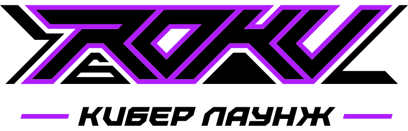
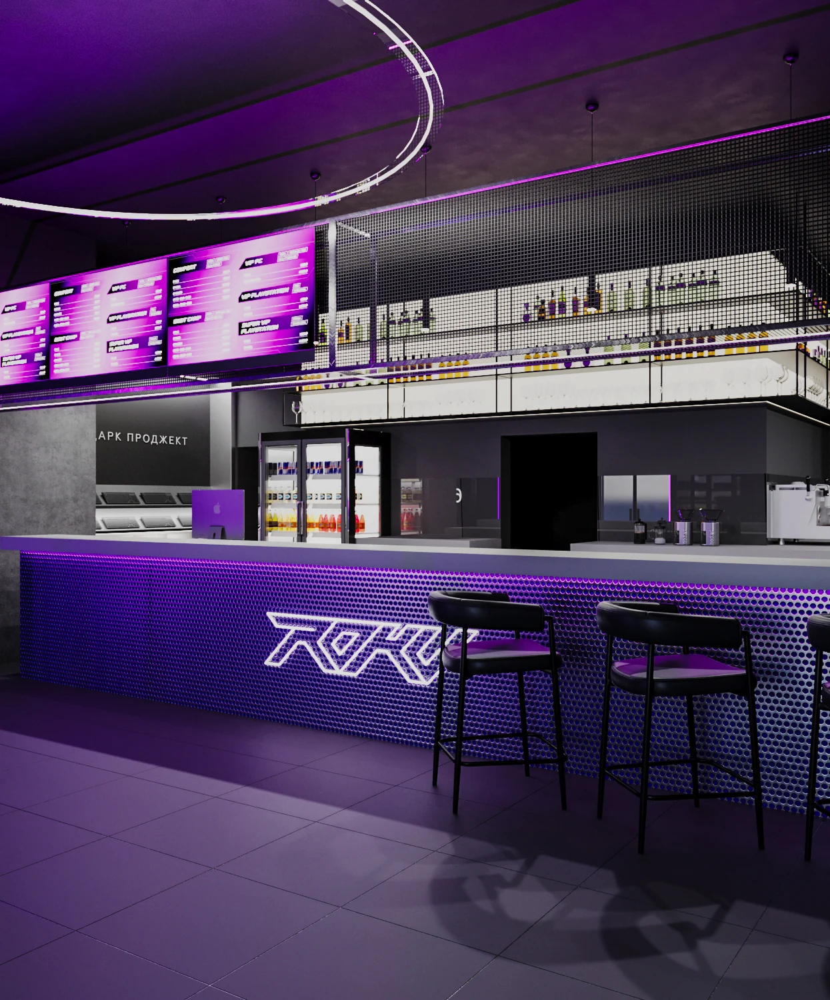

01
ТЫ ИГРАЕШЬ —
МЫ ПОМОГАЕМ
Поможем освоиться, разобраться с оборудованием и начать игровую сессию.

CYBER LOUNGEИграй. Попробуй новое. Оставайся дольше.
Самые производительные ПК в СНГ, кухня ресторанного уровня и лаунж — в ROKU.
Можно прийти на пару каток. Можно собраться компанией, заказать еду и провести здесь атмосферный вечер.
Поможем освоиться, разобраться с оборудованием и начать игровую сессию.
Удобное место, внимание к чистоте и команда рядом, когда что-то нужно.
Пара каток, перерыв на еду или отдых компанией — выбирай свой сценарий.
Загляни внутрь.
Открой фотографии и детали каждой зоны.
Названия, комплектации и тарифы зон объявим перед открытием.

ROKU / KITCHENХорошая игра заслуживает
хорошей еды.
Кулинарные шедевры — часть твоего вечера. Для короткой паузы между раундами или неспешного ужина с друзьями.
Скоро покажем блюда и расскажем подробнее.
Сменить игровое кресло на мягкий диван
Обсудить лучшие моменты. Просто побыть вместе
Приходи знакомиться с ROKU.
В день открытых дверей все зоны будут работать бесплатно. Оставь заявку на участие и познакомься с пространством одним из первых.
Время проведения и подробные условия участия уточняются.
Запись на день открытых дверей
Точный адрес, маршрут и контакты появятся здесь перед открытием.
Хочу на открытие ↗